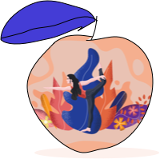

Good to your Health!
A peach a day keeps the plague spirits away!
In addition to being beautiful, fragrant, and
delicious, peaches possess an impressive assortment
of nutrients to support good health, including vitamins,
minerals, antioxidants, and bioflavonoids.
Keep yourself young!
Peaches play important roles in healthy aging.
One day I would have all the books in the world,
shelves and shelves of them. I would live my life
in a tower of books. I would read all day long and
eat peaches to live happily ever after.